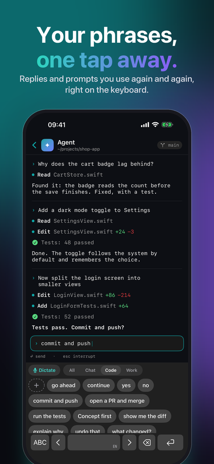
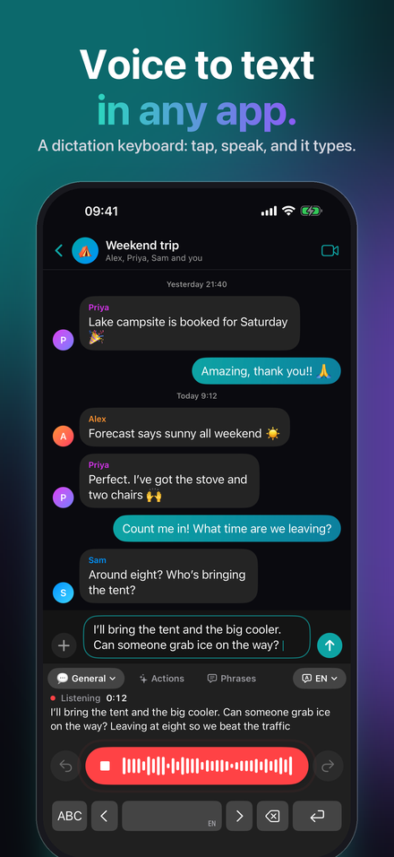
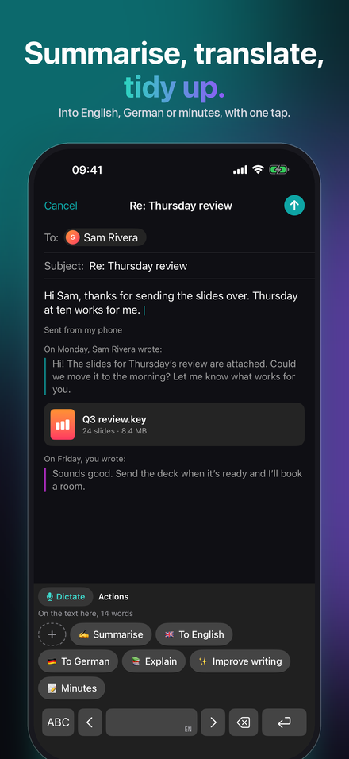
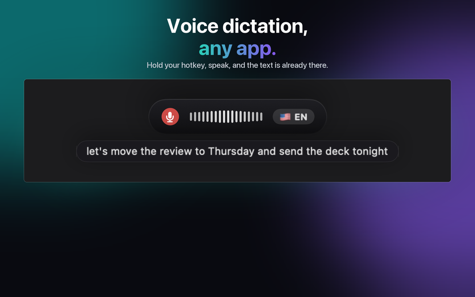
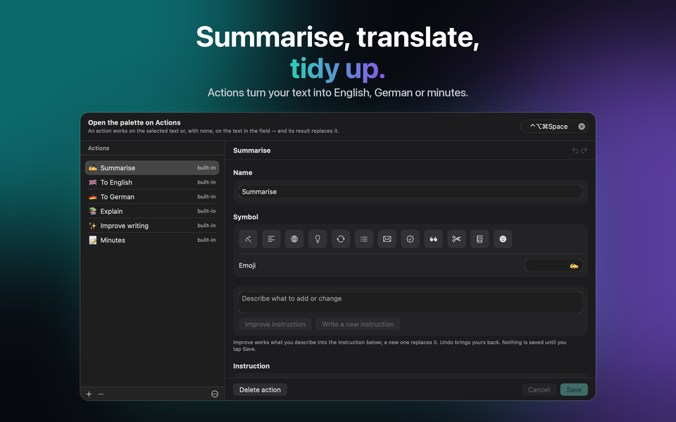
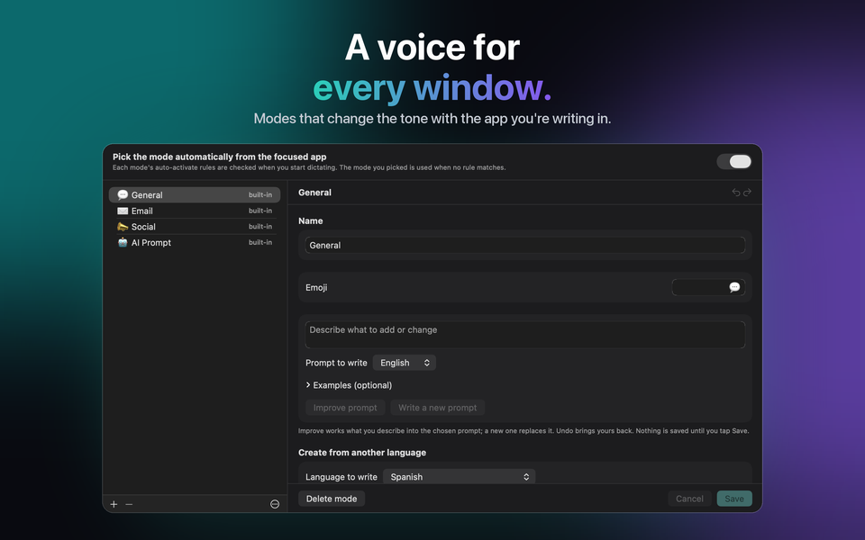

For Mac, Windows, iPhone and iPad
AI Speech to Text in Any App
You speak. It writes. JustTalk is voice dictation for your Mac: speech to text in any app, polished by AI.



Get JustTalk
The same app on every platform, with the same modes, the same languages and the same choice between local and cloud. Each is bought once from its own store: the App Store for Mac, iPhone and iPad, the Microsoft Store for Windows. On Mac, iPhone and iPad, iCloud keeps your modes, phrases, actions and settings in step; Windows takes part through the configuration file.
macOS
macOS 14 or later, Apple silicon or Intel. Dictate into any app with a hotkey.
Windows
Windows 10 (1809) or later, x64, x86 or ARM64. The installer is a signed MSIX.
iPhone & iPad
iOS and iPadOS 26 or later. A keyboard you can dictate from in any app, and a share sheet for recordings you already have.
What it does
Dictation software usually hands you a transcript and leaves the tidying to you. JustTalk finishes the job: press a hotkey, speak, and the cleaned-up sentence is pasted into whatever app is already in front of you — no window to switch to, nothing to copy across.
Written, not transcribed
A language model strips the ums and fixes the punctuation. What lands in the field is something you would have typed.
Local or cloud, your call
Whisper and a local model run entirely on your own computer, free and offline. Or point it at Google, OpenAI, Groq, Mistral or Anthropic with your own key and pay them directly.
100 languages
Detected as you speak, including mid-sentence. No setting to flip when you switch.



What it costs
The app is one payment. The models are free if you run them locally, and pay-as-you-go if you use a cloud provider — billed by them, not by us. Ten minutes of dictation a day on Groq is well under a dollar a month at their September 2026 rates; a heavy 45 minutes a day is roughly one to three dollars. Everything is unlocked for seven days, with nothing held back and no card required.
After the trial the free version keeps working, every day: 2 dictations of up to 30 characters each, 5 phrases, 5 actions and, on iPhone and iPad, 5 typing fixes. JustTalk Pro makes all of it unlimited for a single payment — with a cloud AI service, use is then limited only by your access to that service. It is not a subscription, and there is nothing to cancel.
How people use it
Email and chat
General handles everyday writing; the other modes carry their own tone and vocabulary, and the right one can be picked automatically from the app you are dictating into.
Meetings
Capture both sides of a call and get a transcript of the whole conversation rather than just your half.
Phrases and Actions
What you write again and again is one tap away, on the iPhone keyboard and in the desktop palette. An Action rewrites the selection, or the whole field, with an instruction you write — or have the model write.
Typing on iPhone
The JustTalk keyboard has full letters too, and Fix my typing tidies what you typed when you pause: typos, capitals, punctuation, never your wording.
Recordings
A voice memo, a lecture, an interview: open or share it with JustTalk and get the transcript, on every platform.
Local or cloud — you decide, and we say what each costs
JustTalk is the app around the models, not the models. Run them locally — Whisper plus a local language model through llama.cpp, Ollama or LM Studio — and nothing is uploaded, nothing is billed, no account exists. That path is first-class on a desktop with memory to spare; on iPhone and iPad the on-device recogniser does the same for dictation itself. Or connect a cloud provider with a key you create: faster and more accurate, and they bill you directly for what you use. No analytics, no tracking, no account with us either way. The privacy policy says exactly what each option sends. In the app, Your data & AI shows at any moment where your voice and your text go, and the AI statement says which AI does what.
Dictate in 100 languages, including English, German, French, Spanish, Italian, Portuguese, Japanese, Korean, Greek, Ukrainian and Russian.
JustTalk
Free to try, unlocked with one purchase. Mac, Windows, iPhone and iPad, 100 languages, and nothing uploaded unless you ask for it.